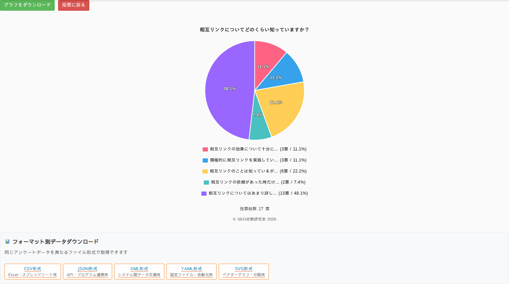
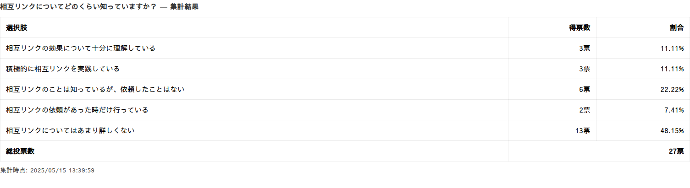

グラフ機能
投票結果は Chart.js による円グラフで表示されます。ここでは、グラフの見方と、画像として保存する方法を解説します。
集計結果の円グラフ
投票すると、または「集計データを拡大」を開くと、結果が円グラフで表示されます。各扇には割合（パーセント）のラベルが表示され、下の凡例では「選択肢名（得票数票 / 割合）」を確認できます。

グラフの種類は円グラフです。棒グラフやドーナツグラフへの切り替え機能はありません。
- 凡例のラベルが長い場合（15文字を超える場合）は省略表示され、マウスを乗せるとツールチップで全文が表示されます。
- グラフには投票総数と、サイト名・年のコピーライトも描画されます。
集計表
「集計データを拡大」で開く画面には、円グラフに加えて、選択肢ごとの得票数と割合をまとめた集計表も表示されます。数字を正確に把握したいときに便利です。

投票前のプレビュー表示
まだ投票していない来訪者にも、現在の傾向がうっすら分かるプレビューの円グラフが表示されます。プレビューでは、割合ラベルや凡例、ツールチップは控えめに（非表示に）なり、投票を促しつつ結果の雰囲気を伝えます。
グラフを画像として保存する
拡大表示の画面にある「グラフをダウンロード」ボタンを押すと、表示中の円グラフを PNG 画像としてダウンロードできます。ファイル名にはサイト名が含まれ、資料やレポートへの貼り付けに使えます。
ダウンロードされる画像形式は PNG です。透過なしの高画質画像なので、そのままスライドや記事に貼り付けられます。